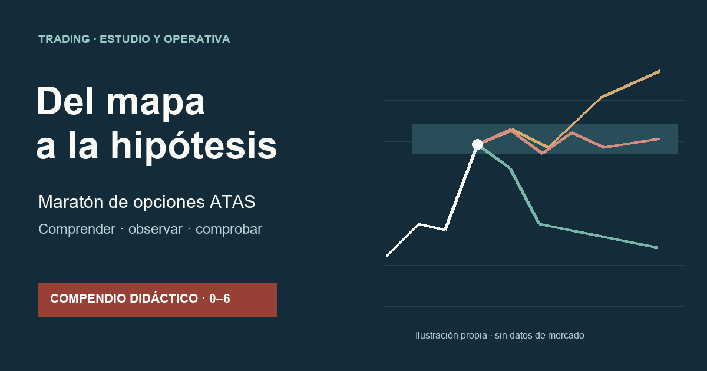
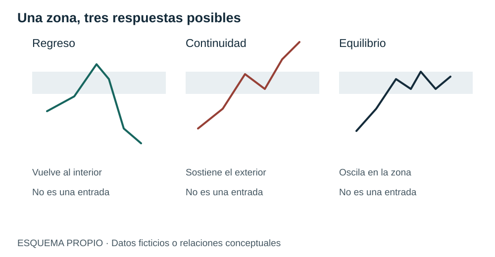
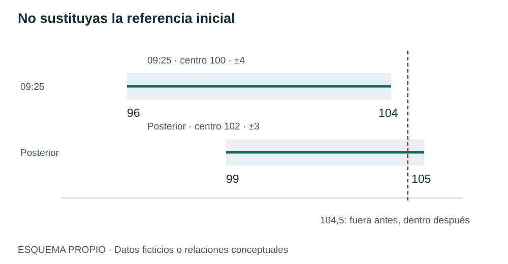
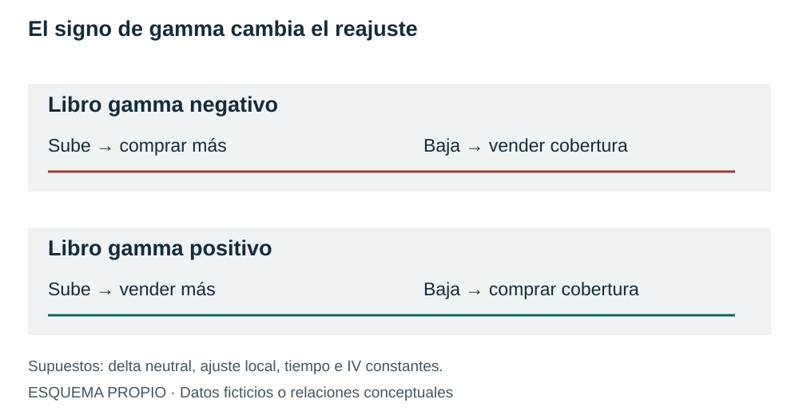
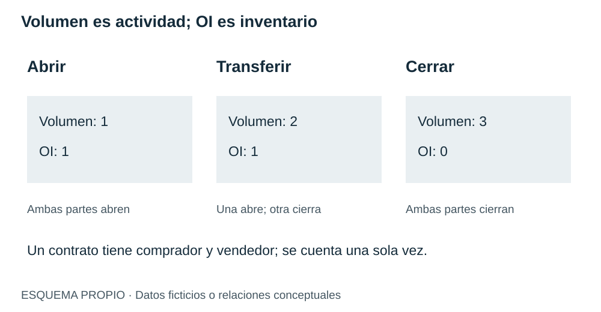
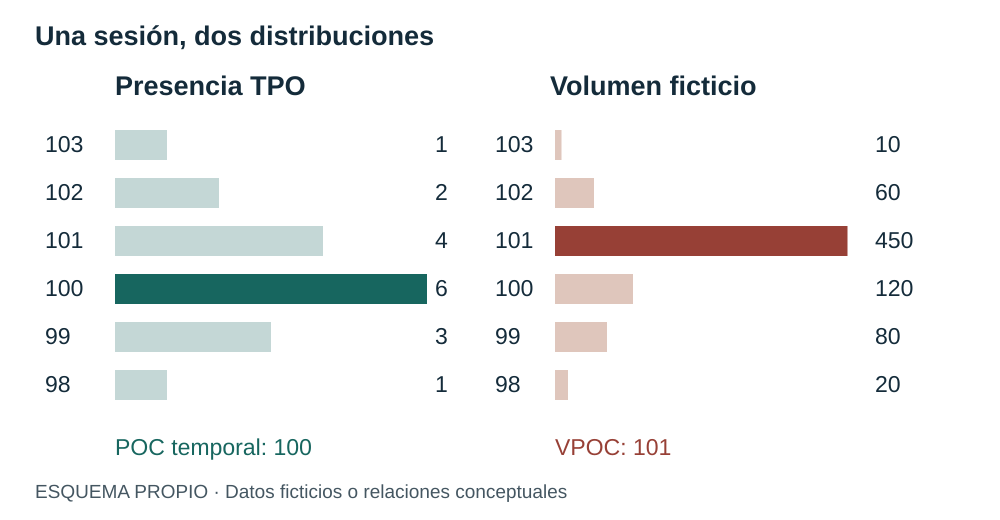
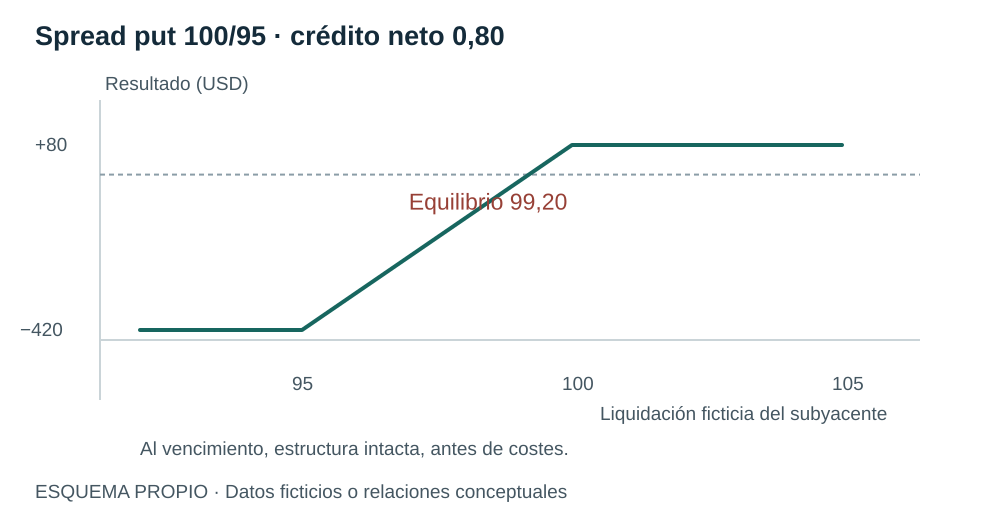
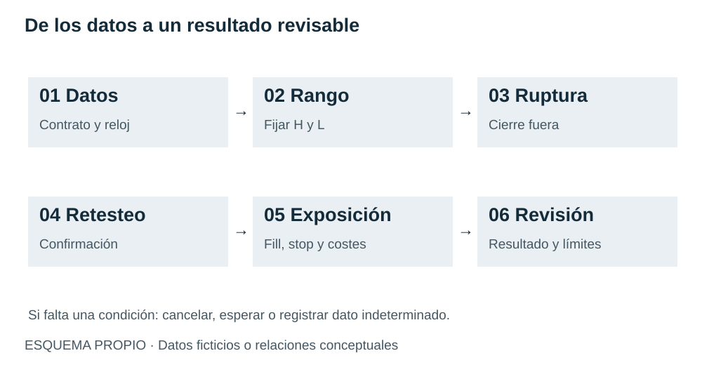
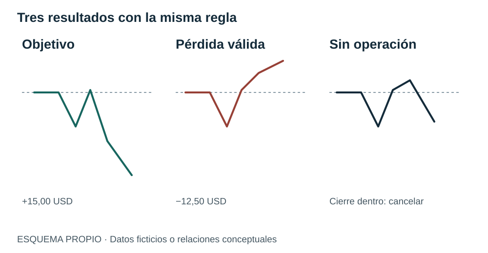

Zonas extremas
Abrir lectura →Texto completo de la edición vigente · lectura ampliable
GUÍA DE ESTUDIO · VOLÚMENES 0–6
Comprende qué aporta cada herramienta, observa la reacción y aprende a definir una prueba sin convertir una explicación en una promesa de resultados.
Siete volúmenes, un recorrido. Las zonas, las opciones y los perfiles ayudan a preparar preguntas. La respuesta aparece después, cuando el precio llega. El contrato elegido determina cuánto y cómo cambia la exposición.
Este compendio reúne lo esencial del maratón ATAS y MarketLab en una lectura en español. No necesitas empezar con ocho indicadores: primero identifica la pregunta que quieres resolver.
Comenzar el recorrido Ir a la estrategia en prueba
Fuente identifica lo que explican los ponentes. Aclaración precisa un concepto con documentación identificada. Ejemplo propio contiene cifras ficticias para aprender. Hipótesis propia · En prueba señala reglas propuestas para investigar, sin resultados de validación.
El compendio es una referencia formativa. La ficha de estrategia tiene estado En prueba, no es un protocolo de trabajo aprobado. No incluye operaciones sobre cuentas ni resultados históricos inventados.
Las marcas de vídeo localizan pasajes documentados en los trabajos. No acreditan cotejo audiovisual íntegro. En el Volumen 0 proceden del PDF previo: no se localizó su transcripción alemana original.
VOLÚMENES 0 Y 6
Un nivel sitúa el precio. Una zona define dónde observar. La conducta posterior decide si la hipótesis merece seguir estudiándose.
El máximo de ayer puede ser rechazado o atravesado hoy. El dato histórico sigue siendo correcto en ambos casos. Lo que cambia es la respuesta del mercado. Por eso preparar una zona y ordenar vender en ella son tareas distintas.
Un extremo necesita instrumento, sesión, horizonte y medida. El máximo de la sesión regular no tiene por qué coincidir con el de toda la negociación electrónica. Un límite de movimiento esperado es calculado; un máximo previo fue observado; un borde del área de valor resume una distribución. Mantén esa identidad al reunirlos.
| Referencia | Pregunta que responde | Límite |
|---|---|---|
| Estructura previa | ¿Hasta dónde llegó y cómo se ordenó el precio? | No revela órdenes actuales ni una defensa obligatoria. |
| Movimiento esperado | ¿Qué amplitud estima un modelo para un horizonte? | No decide dirección ni impide excursiones exteriores. |
| Perfil previo | ¿Dónde se concentró presencia o volumen? | No es una valoración fundamental ni profundidad disponible. |
| Calendario | ¿Qué acontecimiento conocido puede alterar las condiciones? | La hora de una publicación no determina su sorpresa ni la reacción. |
Ejemplo propio, activo ficticio A. Abre en 100. Ayer dejó máximo 104, mínimo 96 y cierre 101. Antes de empezar guardamos movimiento esperado ±4 hasta el cierre y una VAH previa en 103,8. Elegimos observar 103,8–104,2. Esa anchura es una convención ilustrativa propia, no una regla de los ponentes.
Al llegar a 104,1 solo se cumple la ubicación. Todavía puede regresar, construir actividad fuera o atravesar la zona sin detenerse. Una mecha no identifica por sí sola absorción ni a un participante concreto.

Una coincidencia de referencias permite concentrar la atención, pero no multiplica automáticamente la probabilidad de acierto. Un mapa GEX puede utilizar las mismas series que un perfil OI; ADX, RSI y medias derivan del precio. Ni tres líneas próximas ni tres colores favorables equivalen a tres pruebas independientes.
Reduce el mapa a pocas referencias pertinentes para el horizonte. Si no puedes explicar de dónde sale una línea, no la utilices para justificar una decisión. Si cambia el dato, conserva el estado anterior y anota la hora del nuevo.
No. Contiene información posterior. Puedes usar ayer y el estado disponible al decidir; el resultado final pertenece a la revisión.
VOLÚMENES 1 Y 5
Para interpretar una banda necesitas conocer su centro, el método, los datos y la fecha hasta la que se estima el recorrido.
Expected Move, o movimiento esperado, resume una amplitud implícita en las opciones bajo un procedimiento. La prima depende del subyacente, el tiempo, la volatilidad y las condiciones del contrato. Su conversión en distancia no permite conocer la intención de cada participante.
Una aproximación con volatilidad implícita anualizada es EM ≈ S₀ × IV × √(T/B). S₀ es la referencia; IV se expresa en decimal; T y la base B deben compartir convención. Usar jornadas con B=252 y días de calendario con B=365 requiere una IV coherente con esa base. No cambies el denominador para ajustar el resultado.
La suma de primas de una call y una put ATM del mismo strike y vencimiento, un straddle, ofrece otra aproximación a distancia. No es automáticamente una desviación estándar ni la anchura de toda la banda. Tampoco debes comparar dos procedimientos con horizontes distintos como si fueran mediciones idénticas.
Valores ficticios. Modelo √T con convención seleccionada; no reproduce un indicador ATAS ni ofrece precios actuales.
Ejemplo de referencia: 7.693 × 0,115 / √252 ≈ 55,73; límites aproximados 7.637,27–7.748,73.
Con A=100 y EM ±4, la banda inicial es 96–104 y su anchura 8. Si más tarde el centro pasa a 102 y la semiamplitud se reduce a 3, la nueva banda es 99–105. Un precio de 104,5 está fuera de la primera y dentro de la segunda. Ambas pueden ser correctas para preguntas diferentes. La segunda no reemplaza a la primera al evaluar la preparación.

Terminar dentro de una banda, permanecer dentro durante todo el recorrido y ganar una operación en el borde son sucesos diferentes. Si A alcanza 106 y cierra a 102, termina dentro de 96–104, aunque hubo excursión. Un short con stop 104,5 pudo perder mucho antes del cierre.
La cobertura de una normal ideal no es una tasa de acierto. Las estadísticas citadas por los ponentes sobre bordes no incluyen aquí un conjunto reproducible de datos y reglas: no se trasladan a la próxima operación, a otro mercado ni a bandas recalculadas.
Manteniendo referencia e IV, √4=2. Si EM diario es 40, el de cuatro jornadas es 80; el de un cuarto de jornada, 20. En datos reales pueden cambiar simultáneamente IV y centro.
VOLÚMENES 2 Y 5
Delta describe la exposición local. Gamma explica cómo cambia. La cobertura es un mecanismo posible, no una lectura directa de todas las órdenes.
Un creador de mercado ofrece precios compradores y vendedores y administra su inventario. La horquilla puede aportar margen bruto, pero el precio puede cambiar mientras conserva posiciones. Comprar o vender el subyacente permite compensar parte de la exposición, sin eliminar tiempo, volatilidad, liquidez y costes.
Delta aproxima el cambio de prima ante un pequeño movimiento del subyacente con los demás factores constantes. Gamma aproxima el cambio de delta. Long significa comprado y short, vendido: una put comprada es long con delta negativa. El nombre call o put no determina por sí solo el signo de gamma de la posición.
| Posición simple | Delta habitual | Gamma |
|---|---|---|
| Call comprada | Positiva | Positiva |
| Call vendida | Negativa | Negativa |
| Put comprada | Negativa | Positiva |
| Put vendida | Positiva | Negativa |
Ejemplo propio. Acción A a 100 dólares, call delta 0,50, gamma 0,04 por dólar y multiplicador 100 acciones. Un intermediario vende diez calls: −10 × 100 × 0,50 = −500 acciones equivalentes. Comprar 500 acciones aproxima la delta neta a cero.
Si A sube a 101, la delta estimada es 0,54 y las calls vendidas aportan −540. Las 500 acciones iniciales dejan −40 netas: compraría otras 40. Si baja desde 100 a 99, la delta estimada es 0,46 y vendería 40 de sus 500 acciones. Son alternativas desde el mismo estado inicial, no una secuencia de ganancias garantizadas.
Aproximación local con tiempo e IV constantes. No es una simulación de P&L ni estima un libro real.

Una cartera gamma negativa puede requerir ajustes en el sentido del movimiento; una positiva, en contra. Eso puede contribuir a amplificar o amortiguar si el flujo resulta relevante. No garantiza tendencia ni retorno. Una caída ordenada no demuestra gamma negativa y el VIX no identifica el libro de dealers.
GEX agrega sensibilidades bajo una metodología y una convención de posición. Antes de interpretar registra universo, fecha, vencimientos, unidades y supuestos sobre quién mantiene cada lado. OI público por sí solo no proporciona ese libro. Una proyección futura de superficie mantiene supuestos sobre posiciones: no es actividad futura observada.
Solo bajo el multiplicador 100 y la delta del instante ilustrado. Cambiar contrato, cantidad, delta o signo cambia la equivalencia. En futuros y opciones sobre índices las unidades son distintas.
VOLUMEN 3
El interés abierto es inventario pendiente de una serie. El volumen es actividad. Ninguno identifica por sí solo intención o posición del creador de mercado.
Una serie combina subyacente, call o put, strike y vencimiento. OI añade cuántos contratos siguen abiertos a una fecha de referencia. Cada contrato tiene comprador y vendedor y se cuenta una vez, no dos. No es una orden pendiente en el libro ni dinero depositado en el strike.
Ejemplo propio. Ana compra para abrir y Bruno vende para abrir un contrato: volumen +1, OI +1. Ana vende para cerrar a Carla que compra para abrir: volumen +1, OI sin cambio. Después Carla y Bruno cierran sus lados: volumen +1, OI −1. Tras tres operaciones el volumen acumulado es tres y no queda contrato abierto.

Diez mil calls y diez mil puts suman veinte mil contratos y saldo cero. Dieciocho mil calls y dos mil puts suman lo mismo y saldo +16.000 con la convención calls menos puts. Cero en el saldo no es ausencia de contratos. Un saldo negativo no demuestra gamma negativa; la resta de cantidades no calcula sensibilidades ni identifica propietarios.
Una casilla vacía tampoco es cero. Si faltan OI de puts o la hora del inventario, no completes la información a partir del volumen. El OI comunicado y una estimación intradía de posicionamiento pueden tener frecuencia y metodología diferentes.
En el ejemplo ficticio, strike 105 tiene 800 calls E1 y 100 E2; strike 110 tiene 50 E1 y 900 E2. Al agregar lidera 110 con 950 frente a 900. Si estudias E1 lidera 105. No cambiaron las cifras: cambió el universo. La proximidad del vencimiento puede alterar sensibilidades y retirar contratos, sin obligar al precio a visitar su strike.
| Antes de llevar un nivel al gráfico | Qué conservar |
|---|---|
| Serie | Subyacente, tipo, strike y vencimiento. |
| Magnitud | OI absoluto, saldo, volumen o exposición calculada. |
| Momento | Fecha del dato y de consulta; frecuencia real de actualización. |
| Escala | Transformación entre índice, futuro o ETF si existe. |
| Interpretación | Lugar de observación; rechazo, paso o permanencia todavía abiertos. |
Que haya 800 contratos registrados no significa que puedas negociar 800 ahora a un precio. La liquidez ejecutable depende de bid, ask, tamaños y condiciones de mercado. Tampoco un perfil por strike muestra el precio pagado por todos los titulares.
Volumen 75; OI final 130. Las transferencias suman actividad pero no inventario. El cálculo excluye otros eventos contractuales. No permite atribuir una intención alcista a esos 130 contratos.
VOLÚMENES 4 Y 6
TPO cuenta presencia por precio y subperíodo. El perfil de volumen cuenta negociación. La secuencia temporal permite interpretar cómo se llegó a esa distribución.
Divide una sesión en bloques y asigna una letra a cada uno. Si un nivel se negocia durante A, recibe una A; repetir la visita dentro de A no añade otra. Si vuelve en B, añade B. Una marca TPO no demuestra permanencia durante todo el bloque ni cantidad negociada.
Ejemplo propio. Seis bloques de treinta minutos: A visita 98–100; B y C, 99–101; D, 100–102; E, 100–103; F, solo 100. Los volúmenes de la tabla también son ficticios y tienen una distribución diferente.
| Precio | Letras | TPO | Volumen ficticio |
|---|---|---|---|
| 103 | E | 1 | 10 |
| 102 | D E | 2 | 60 |
| 101 | B C D E | 4 | 450 |
| 100 | A B C D E F | 6 | 120 |
| 99 | A B C | 3 | 80 |
| 98 | A | 1 | 20 |

Hay 17 TPO distribuidos en seis bloques, que duran tres horas; no 17 medias horas sucesivas. TPO POC es 100, con seis presencias. VPOC es 101, con volumen 450. La diferencia es coherente: cada medida responde una pregunta distinta.
El área de valor reúne una proporción configurada de la distribución. En una regla didáctica propia, partimos del POC y añadimos la fila contigua con más TPO hasta superar el 70 %. Sumamos 6+4+3=13 de 17, 76,47 %, en 99–101. Las filas discretas explican el exceso; no se afirma que ese sea el algoritmo exacto de ATAS.
VAH y VAL son los bordes del área, no necesariamente el máximo y mínimo de sesión. El 70 % de una distribución no es una probabilidad de volver ni una tasa de balance. Tampoco equivale automáticamente a una desviación estándar.
La primera hora A+B deja IB 98–101. Cuando E llega a 103, amplía el rango de sesión, pero no modifica el IB ya fijado. Un OR de quince minutos es otra ventana. Cuatro velas M15 y dos bloques de treinta minutos solo coinciden si comparten inicio.
Con VA previa 99–101 y POC 100, una apertura en 102 plantea si el mercado construirá presencia arriba o regresará. Abrir fuera no confirma aceptación. Un retorno al área puede contrariar la idea de soporte en VAH, sin volver erróneo el perfil de ayer.
Define aceptación con observaciones ya disponibles: cierres, tiempo o negociación según una regla previa. El número de periodos que queda fuera al final del día no estaba completo por la mañana. Combinar perfiles puede aclarar un balance o esconder una migración de valor; conserva sesiones, bloques y motivo de agregación. El POC combinado se recalcula por filas, no promediando POC diarios.
No. Es una referencia histórica bajo una definición de visita. No acredita órdenes pendientes ni obliga al precio a volver. Si cambia la sesión o la agrupación de precios, puede cambiar el propio perfil.
VOLÚMENES 5 Y 6
Acertar la dirección del subyacente no garantiza ganar con una opción. El contrato, la prima, el tiempo y la gestión forman otra capa de decisión.
Una opción 0DTE vence en la sesión considerada. No significa que toda operación intradía use ese vencimiento: comprar una opción con doce días restantes y venderla veinte minutos después sigue siendo intradía. Cerca del vencimiento, algunas sensibilidades pueden cambiar rápidamente alrededor del strike; una opción muy alejada del dinero no tiene necesariamente gamma alta.
Delta y gamma describen precio y exposición. Theta describe el efecto local del tiempo sobre el valor y vega, el de IV. Charm relaciona delta y tiempo; vanna, delta e IV. No se suman como si compartieran unidades. La delta de una call ITM puede acercarse a uno al vencer; la de una OTM, a cero: no se derriten todas en la misma dirección.
| Expresión de una idea alcista | Qué requiere valorar | Qué no basta conocer |
|---|---|---|
| Futuro | Contrato, valor por punto, precio de ejecución, stop y liquidez. | La distancia del stop no garantiza una pérdida exacta. |
| Call comprada | Serie, prima bid/ask, multiplicador, vencimiento, IV y salida. | Subida del subyacente no determina por sí sola el beneficio. |
| Spread de puts a crédito | Dos patas compatibles, crédito conjunto, protección y gestión. | Cobrar prima no equivale a haber ganado esa prima. |
Ejemplo propio. Call strike 100, prima 2, multiplicador 100. Cuesta 200 antes de costes. Con liquidación 101 vale 100 y pierde 100. En 102 queda en equilibrio y en 103 gana 100. Es una tabla de vencimiento; una salida anterior necesita la cotización real de la prima, no solo el precio del activo.
Ejemplo didáctico del Volumen 6, sin ejecución acreditada. Put vendida 100 y put comprada 95, mismo vencimiento, cantidad y subyacente; crédito neto 0,80, multiplicador 100. Crédito máximo 80, anchura 500, pérdida máxima teórica 420, equilibrio 99,20 al vencimiento, antes de costes. En 98 pierde 120, un resultado intermedio. No se reducen todos los desenlaces a +80 o −420.

Quitar una pata, sufrir asignación o conservar una posición generada por ejercicio cambia el riesgo. SPX liquidado en efectivo y opciones sobre acciones con entrega no comparten todas las condiciones. Una salida anticipada del spread necesita cotización conjunta ejecutable.
La call cubierta conserva riesgo de caída del activo y limita parte de la subida. La put con efectivo reserva capacidad de adquisición, pero no evita la pérdida si el activo cae. Una renovación cierra una posición con su resultado y abre otra con una obligación nueva: recibir otro crédito no borra la pérdida anterior.
Ejemplo propio de caja. Cobrar 80, recomprar por 180 y vender otra opción por 220 deja caja +120, pérdida realizada −100 en la primera y una posición nueva abierta. El resultado final del conjunto todavía no se conoce. Varios spreads o puts de distintos nombres pueden perder simultáneamente ante caída y subida de volatilidad.
Bajo un supuesto binario artificial de +80 o −420, el equilibrio antes de costes es 84 %. Con coste total 5 por operación sube a 85 %. Con 80 % hipotético de aciertos: 0,8×80 − 0,2×420 −5 = −25. No es una frecuencia estimada de los vídeos; con resultados intermedios deben usarse las medias observadas.
HIPÓTESIS PROPIA · VERSIÓN 0.1 · EN PRUEBA
Estudiaremos una ruptura bajista y un retesteo del rango inicial. Sus reglas numéricas son propuestas editoriales para investigar, no reglas certificadas de los ponentes.
Los últimos episodios describen rechazo en extremos, salida de rango y estructuras con opciones. Mezclarlos produciría numerosas excepciones. El núcleo elegido estudia una sola familia: continuidad bajista tras ruptura de un rango conocido. Se ensaya con un futuro MES; las opciones aportan contexto, no una prima simulada que no conocemos.
Hipótesis: una salida inferior del rango inicial seguida de un retesteo que cierre de nuevo fuera podría ofrecer continuidad suficiente para cubrir exposición y costes. También puede fracasar. La prueba debe comprobar tanto su resultado como qué parte, si alguna, añaden EM, OI y perfiles. No se exige que todos coincidan para fabricar una entrada.

| Elemento | Definición propuesta antes de probar |
|---|---|
| Mercado y datos | MES, un vencimiento explícito y datos de operaciones del proveedor identificado en cada muestra. Elegir el contrato antes de la sesión; no usar un continuo ajustado para fills. Registrar versión ATAS, proveedor y calendario. |
| Sesión y reloj | Días con sesión regular completa de acciones estadounidenses. Zona America/New_York. OR 09:30–10:30; candidatos desde 10:30 hasta 12:00. Esto es una ventana analítica, no toda la sesión del futuro. |
| Barras | M5 alineadas al reloj de Nueva York; intervalos cerrados por la izquierda y abiertos por la derecha. Solo barras terminadas. OR incluye doce barras desde 09:30 a 10:25, conocidas a las 10:30. |
| Contexto guardado | A las 09:25 registrar máximo/mínimo y TPO/volumen de la sesión regular anterior, calendario y EM, si está disponible, con anclaje y horizonte. No se exige un signo GEX ni se usa un perfil final de hoy. |
| Zona principal | L = mínimo del OR; H = máximo; amplitud W = H−L. Excluir W menor de 4 o mayor de 40 puntos. Estos umbrales son hipótesis propias para una primera prueba, sin optimizar después de ver resultados. |
| Primera ruptura | Primera barra M5 posterior al OR con cierre ≤ L−0,25. Debe terminar antes de las 12:00. Guardar esa barra y abrir una ventana de tres barras posteriores. Solo un candidato por sesión. |
| Retesteo confirmado | Primera de esas tres barras con máximo entre L−0,25 y L+0,50, y cierre ≤ L−0,25. Si antes de confirmarla cualquier barra cierra > L, cancelar. Una penetración hasta L+0,50 solo se admite si cierra fuera. |
| Entrada hipotética | Venta a mercado al primer precio negociable posterior al cierre confirmador. No usar retrospectivamente el cierre como fill garantizado. Si la entrada llega a las 12:00 o después, cancelar; si los datos no permiten valorar la ejecución, marcar indeterminada. |
| Stop y filtro de distancia | Stop de compra en L+1 punto; distancia desde fill estrictamente entre 0 y 4 puntos. Si cae fuera de ese intervalo, descartar antes de simular posición. No desplazar el stop para salvar una operación. |
| Objetivo y tiempo | Objetivo límite E−2d, donde E es fill y d = stop−E. Salir al primer precio ejecutable a las 12:00 si no terminó antes. Sin parciales, sin renovación, sin segunda entrada. |
| Tamaño y costes de estudio | Un MES fijo por operación para comparar resultados, no un tamaño personal recomendado. MES: 5 USD por punto, tick 0,25 = 1,25 USD. Coste ficticio total 2,50 USD, más deslizamiento modelizado de un tick por orden a mercado o stop; el fill real tiene prioridad si se conoce. |
| Ejecución de objetivo | En simulación con operaciones, exigir negociación un tick más allá del objetivo antes de dar por ejecutado el límite. Es una aproximación conservadora, no reconstruye una cola real. Registrar su uso. |
| Exclusiones | Sesión abreviada, datos incompletos o incoherentes, contrato o actualización no identificados. Para la versión 0.1, excluir jornadas con publicaciones BLS Employment Situation, CPI o decisión FOMC, según calendario oficial guardado antes de la sesión. No decidir la exclusión tras ver volatilidad. |
| Fin de la oportunidad | Sin ruptura, sin retesteo en tres barras, recuperación del interior o entrada fuera de ventana: sin operación, con motivo. No invertir automáticamente a compra ni añadir el rechazo de EM como alternativa. |
Documentación de unidades: CME, especificaciones MES. Fuentes de exclusión: calendario BLS y calendario FOMC. Consulta 16/10/2026. La conversión a Madrid debe hacerse para cada fecha; no se fija una diferencia horaria permanente.
Con referencia de venta 99,50, el ajuste adverso de un tick da un fill modelizado E=99,25. Stop 101,00: d=1,75 puntos. El objetivo 2d queda en 95,75. Un MES implica 8,75 USD de distancia al stop; añadiendo un tick adverso de salida (1,25 USD) y coste total 2,50, la pérdida supuesta es 12,50 USD. El deslizamiento de entrada ya está incorporado en E y no se añade otra vez.
Si el mercado salta sobre el stop, la pérdida puede ser mayor. Margen exigido y pérdida económica no son lo mismo. Los precios de este ejemplo son ficticios, no una sesión MES real. No se presupone saldo, tolerancia al riesgo ni límite personal.
| Variante | Pregunta adicional | Cómo evitar una conclusión prematura |
|---|---|---|
| EM guardado | ¿Cambia el resultado si la ruptura tiene más espacio hasta un borde fijo? | Registrar distancia y bandas a las 09:25, no sustituirlas por las de cierre. Definir cortes antes de otra muestra. |
| OI / gamma | ¿Hay diferencias según concentración o modelo de cobertura? | Exigir dato disponible, mapeo válido y convención. Una representación distinta del mismo dato no es otro filtro independiente. |
| Perfil previo | ¿Importa abrir dentro o fuera de la VA previa? | Conservar misma sesión y configuración; no usar VA final de hoy. |
| ADX / DI, RSI 9, EMA 9/21 | ¿Mejora el resultado una confirmación adicional? | Los módulos del V6 no dan todos los umbrales. Definirlos y probar uno cada vez; no afirmar implementado Options Edge. |
| Opción o spread | ¿Qué cambia al expresar la misma tesis con otro contrato? | Otra prueba: guardar serie, cotizaciones bid/ask, primas de ambas patas y gestión de ejercicio. No convertir puntos de MES en beneficio de opciones. |
El rechazo cerca de un borde preparado sigue siendo una idea formativa del maratón, pero no forma parte de este núcleo. Requeriría definir extremo, pérdida de impulso, selección de pivotes, confirmación y gestión. La venta de primas a treinta o cuarenta y cinco días exige además capital comprometido y riesgo de cartera. Mantenerlas separadas permite averiguar qué se está evaluando.
V5 · retesteo y variantes · 1:17:59 ↗V6 · rango inicial · 46:32 ↗V6 · confirmaciones con medias · 09:54 ↗EJEMPLOS FICTICIOS · PRUEBA SIN RESULTADOS
Una explicación comprensible termina cuando puedes reconstruir qué se sabía, qué condición ocurrió, si hubo ejecución y cómo se calculó el resultado.
Ejemplo propio de aritmética, no sesión MES real. Utilizamos una escala ficticia L=100 y H=104, con unidades monetarias MES solo para ilustrar el cálculo. No son precios actuales ni un contrato histórico. A las 10:35 aparece cierre 99,50; a las 10:40 el retesteo alcanza 100,25 y cierra 99,75. La primera referencia ejecutable posterior es 99,50. El modelo de un tick adverso fija E=99,25; stop 101,00; d=1,75; objetivo E−2d=95,75.

| Desenlace | Secuencia supuesta | Resultado ilustrativo |
|---|---|---|
| Objetivo | Venta de referencia 99,50, ajustada a 99,25 por un tick adverso. Negociación llega a 95,50: se admite fill del límite en 95,75. | (99,25−95,75)×5 −2,50 = +15,00 USD. No se carga deslizamiento al límite ya definido. |
| Pérdida válida | Misma venta ajustada 99,25; stop 101,00, salida 101,25 por un tick adverso. Después el precio podría caer. | (99,25−101,25)×5 −2,50 = −12,50 USD. La caída posterior no recupera esta operación. |
| Sin operación | En vez de confirmar, el primer retorno cierra en 100,25, dentro del OR. Se cancela antes de la orden. | 0 USD de posición: no hubo entrada. Si luego cae a 95,75, no se inventa una ganancia perdida ni un fill. |
Se usa E ajustado para calcular d y objetivo, igual que en la ficha. Con fills observados no se añade de nuevo el modelo de ticks. El registro distingue ejecución observada y ejecución modelizada, para no mezclar evidencia diferente.
Ocho. Los límites son 96 y 104. ±4 es semiamplitud, no banda de cuatro puntos.
Terminó dentro, pero negoció fuera. La respuesta depende del suceso definido. Ninguno calcula por sí solo el resultado de una operación.
No se deduce. Hay comprador y vendedor; falta conocer o modelizar el libro, el multiplicador y las sensibilidades.
No. Son tres horas con bloques de treinta minutos; cada bloque visita varios precios. La suma de marcas no mide duración sucesiva.
Son transformaciones del precio. La independencia no está demostrada. Cada filtro debe compararse sobre la misma muestra y ejecución.
No. Strike 100, prima 2 y liquidación 101 dejan pérdida de una unidad por subyacente. También importan costes; una salida anterior exige prima cotizada.
No. Separa ausencia de escenario, cancelación, orden no ejecutada, dato indeterminado y pérdida de una posición efectivamente simulada.
No. Conserva los dos estados y sus horas. Usar datos posteriores para justificar la decisión inicial incorpora información futura.
Descargar plantilla CSV de registro Consultar herramientas y fuentes →
TRAZABILIDAD · CONSULTA 16/10/2026
La síntesis conserva el alcance de los trabajos y permite ampliar cada concepto en su volumen de procedencia.
Estas versiones HTML conservan el texto editorial de los maestros vigentes, incluidas explicaciones, ejercicios y fuentes. Las capturas externas y los adjuntos internos se sustituyen por referencias al vídeo o a documentación pública; los DOCX y PDF aprobados permanecen íntegros en la biblioteca del proyecto. No son nuevas ediciones paginadas.
Texto completo de la edición vigente · lectura ampliable
Texto completo de la edición vigente · lectura ampliable
Texto completo de la edición vigente · lectura ampliable
Texto completo de la edición vigente · lectura ampliable
Texto completo de la edición vigente · lectura ampliable
Texto completo de la edición vigente · lectura ampliable
Texto completo de la edición vigente · lectura ampliable
Aclaración documental actualizada. Options Chain depende de datos disponibles en la conexión y de las opciones del indicador concreto. Options X-Ray utiliza analítica de opciones SPX mapeada a gráficos compatibles. No son fuentes intercambiables ni las pantallas históricas de oro o NQ acreditan compatibilidad actual.
| Herramienta | Distinción que afecta a la lectura | Fuente oficial |
|---|---|---|
| Options Expected Move | Conexión con opciones, horizonte y anclajes; no confundir con X-Ray. | ATAS · Expected Move |
| X-Ray Expected Move | Datos SPX para ES, MES, SPY y US 500; actualización por minuto. | ATAS · X-Ray EM |
| X-Ray Surface Profile | Sensibilidades modelizadas; todos los vencimientos; proyección futura condicionada, no observada. | ATAS · Surface |
| X-Ray Strike Profile | Distribución por strike; selección de vencimientos y modo de consulta propios. | ATAS · Strike |
| TPO y perfil de volumen | Medidas y ajustes distintos; conservar sesión, bloques y precios por fila. | ATAS · TPO en español |
La ayuda de ATAS describe producto y metodología, no valida una ventaja operativa. No se auditó una instalación ni el código de los módulos. Las cifras comerciales y los porcentajes promocionales de los vídeos no se usan como prueba.
Fuentes principales: los siete trabajos editoriales del proyecto a partir de ATAS Deutschland y MarketLab, con sus referencias temporales. En V0 no apareció la transcripción alemana original; sus marcas proceden del PDF anterior. En los demás volúmenes, los enlaces remiten a marcas de transcripciones automáticas. No se acredita una revisión audiovisual íntegra nueva ni el minuto exacto de cada captura.
Fuentes de contraste: documentación ATAS enlazada, OIC · delta, OIC · gamma, OIC · interés abierto, OIC · spread put, CME · MES. Las consultas previas y las incidencias específicas se conservan en las lecturas completas; funciones ATAS, unidades MES y calendarios se contrastan para este compendio el 16/10/2026.
Las ilustraciones C-01–C-08 y la portada son propias. No contienen cotizaciones ni recrean operaciones reales. Se evaluaron los inventarios y ejemplos del banco; la selección conceptual está registrada. Al no constar permiso de redistribución de las capturas ATAS/MarketLab, esta entrega pública utiliza esquemas originales y enlaces a los vídeos, sin extraer ni empaquetar esos fotogramas.
Edición independiente de estudio. ATAS, MarketLab y las demás marcas identifican a sus fuentes; no se afirma afiliación ni aval. La propuesta 0.1 permanece En prueba, sin backtest ejecutado. El paquete está preparado localmente; aún no se ha publicado.